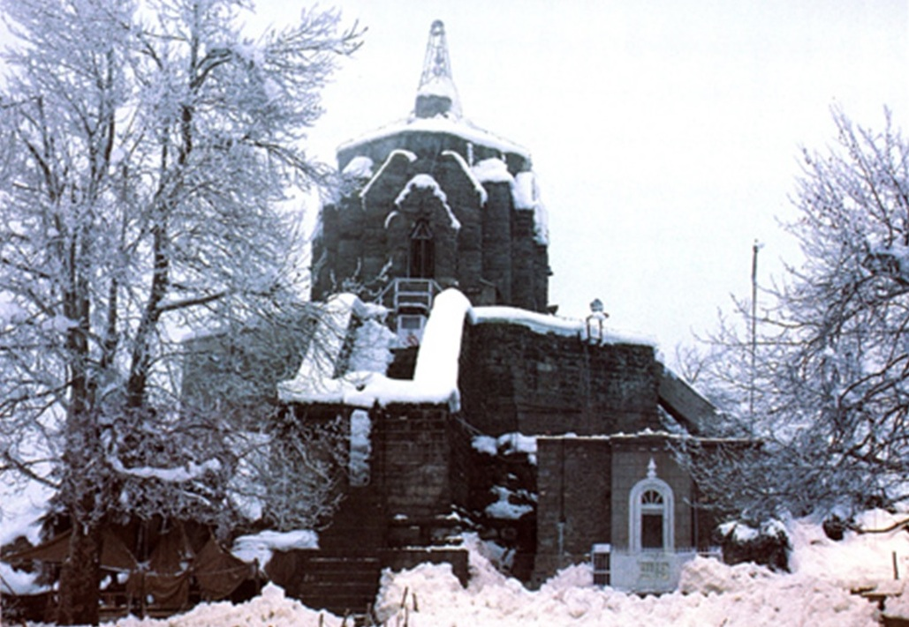

~ Places to Visit in Sri Nagar ~
Popular things to do

Hiking Tours
Top Attractions in Sri Nagar

Dal Lake
The urban lake, is integral to tourism and recreation
in Kashmir and is named the “Jewel in the crown of Kashmir”
or “Srinagar's Jewel”. The lake is also an important source
for commercial operations in fishing and water plant harvesting.
Indira Gandhi Tulip Garden
It is the largest tulip garden in Asia spread over an area
of about 30 ha (74 acres). It is situated at the base of
the Zabarwan range, built on a sloping ground in a terraced
fashion consisting of seven terraces with an overview of
the Dal Lake.

Sonamarg
Sonamarg called gold meadow , name means 'meadow of gold'
and it is rightly called so with the enchanting beauty of
flowery meadows, snow-clad peaks, glaciers and pristine lakes.
The Sindh or Indus river meanders through the valley nourishing
an exotic flora and dense forests of fir, pine and silver
birch in its vicinity.

Shankaracharya Hill
The Shankaracharya Hill is regarded as one of the best attractions
in Kashmir. This hill offers a pleasant panoramic view over the
entire Srinagar! Known for: The ancient temple of Lord Shiva and
the breathtaking view of Srinagar from the tip of the hill. How
to reach: 4.4 km away from the central city of Srinagar.
Nishat Garden
Nishat Bagh is a terraced Mughal garden built on the eastern side
of the Dal Lake, close to Srinagar in the UT of Jammu and Kashmir,
India. It is the second largest Mughal garden in the Kashmir Valley.
The largest in size is the Shalimar Bagh, which is also located on
the bank of the Dal Lake
Nigeen Lake
The lake is a major tourist attraction in Srinagar, known for its
relatively pristine waters as compared to the Dal lake. Houseboats
and Shikaras are a usual sight. Its also ideal for swimming, being
deeper and less crowded than the Dal lake.

Yousmarg
Located in Bagdam district, Meadows of Jesus or Yusmarg is known
for its long stretches of green pastures. An ideal tourist attraction
that in its humblest of ways teaches to revere nature, Yusmarg is a
proud part of the Valley of Kashmir. Embark on trails that lead to
exotic places like Sang-e-Safed Valley and Nilnag.

Badamwari Garden
Badamwari Park is a park in Srinagar, Jammu and Kashmir,
India. It is known for the early bloom of almond flowers.
The park is situated at the foothills of Koh e Maraan hill
which gives an immense look. It is a historical park which
existed before the 14th century, though the exact date is
still unknown.
Mughal Gardens
The Gardens boasts of growing 159 celebrated varieties of roses
which blossom primarily in the month of February and March. They
include, Adora, Mrinalini, Taj Mahal, Eiffel Tower, Modern Art,
Scentimental, Oklahoma (also called black rose), Belami, Black Lady,
Paradise, Blue Moon and Lady X.
Shalimar Bagh
The Shalimar Bagh is well known for chini khanas, or arched niches,
behind garden waterfalls. They are a unique feature in the Bagh.
These niches were lighted at night with oil lamps, which gave a
fairy tale appearance to the water falls.
Doodhpathri
The name “doodpathri” means Valley of Milk. It is said that the famous
saint of Kashmir Sheikh ul Aalam Sheikh Noor din Noorani has prayed
here and once when he was in search of water in the meadows, to offer
prayers, he pricked the ground with his stick to search for water
and milk came out.
Pari Maha
The Pari Mahal was built by Mughal Prince Dara Shikoh in the mid-1600s.
It served as a library and an abode for him. Dara Shikoh was said to have
lived in this area in the years 1640, 1645, and 1654. It was further
used as an observatory, useful for teaching astrology and astronomy.